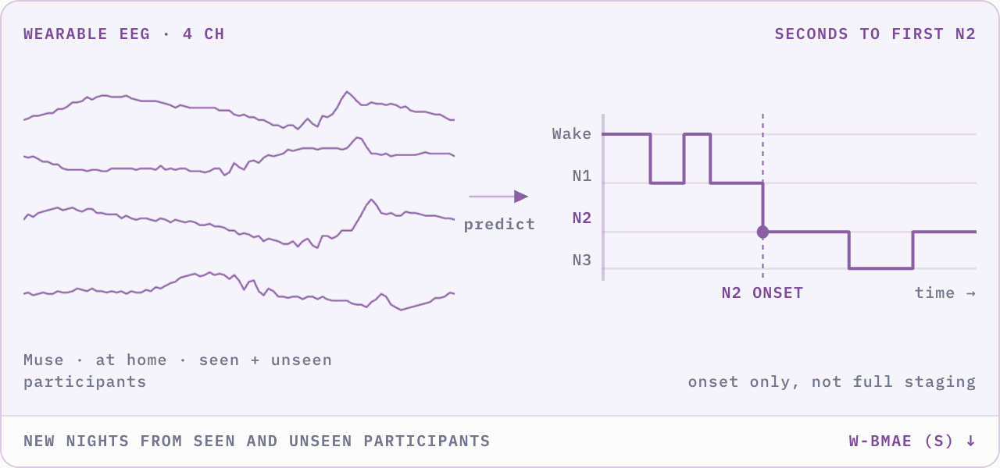

Understand the challenge.
Compare tracks, datasets, metrics, prizes, rules, dates, and organizers. Use this site to find the right next destination.
Explore the tracks →This guide takes you from choosing a track to submitting a trained model. NeuralBench offers optional start kits, public baselines, and a development environment, but you may use your own pipeline. Registration, submission rules, uploads, and official evaluation are handled on Codabench.
This website is your map. NeuralBench is the recommended optional preparation environment. Codabench is the official participation and evaluation platform.
Compare tracks, datasets, metrics, prizes, rules, dates, and organizers. Use this site to find the right next destination.
Explore the tracks →Use the NeuralBench start kits to access public task examples, reproduce baselines, and develop or train models in a common environment.
Choose a NeuralBench start kit ↓Read the Participation guidelines, register for each track, upload your trained model package, and receive official scores.
Open a Codabench track portal ↓Each track has its own NeuralBench start kit: the full guide, a quick start, and the baseline scores to reproduce. Following it once gives you a verified pipeline before you introduce your own model, but it is not required for entering the competition.
Install NeuralBench and run a short end-to-end check using this Track 01 example.
pip install neuralbenchInstall it once in your development environment, then open the guide for your track.
neuralbench eeg image --downloadneuralbench eeg image --prepareneuralbench eeg image -m eegnet --debug
Download the public data, prepare the cache, then run a short pipeline check.
Baseline results to reproduce on public data. Compare the published Track 01 scores, model families, parameter counts, training costs, and configurations.
Install NeuralBench and run a short end-to-end check using this Track 02 example.
pip install neuralbench 'moabb>=1.7.1'Install it once in your development environment, then open the guide for your track. MOABB, which serves the public motor-imagery datasets, is not part of the base install.
neuralbench eeg motor_imagery --downloadneuralbench eeg motor_imagery --prepareneuralbench eeg motor_imagery -m eegnet --debug
Download the public data, prepare the cache, then run a short pipeline check.
Baseline results to reproduce on public data. Compare the published Track 02 scores, model families, parameter counts, training costs, and configurations.
Install NeuralBench and run a short end-to-end check using this Track 03 example.
pip install neuralbenchInstall it once in your development environment, then open the guide for your track.
neuralbench eeg sleep_onset --downloadneuralbench eeg sleep_onset --prepareneuralbench eeg sleep_onset -m eegnet --debug
Download the public data, prepare the cache, then run a short pipeline check.
Baseline results to reproduce on public data. Compare the published Track 03 scores, model families, parameter counts, training costs, and configurations.
Install NeuralBench and run a short end-to-end check using this Track 04 example.
pip install neuralbench 'eegdash>=0.8.2'Install it once in your development environment, then open the guide for your track. EEG-Dash, which serves the emg2pose data, is not part of the base install.
neuralbench emg pose -m vemg2pose --downloadneuralbench emg pose -m vemg2pose --prepareneuralbench emg pose -m vemg2pose --debug
Download the public data, prepare the cache, then run a short pipeline check. Keep -m vemg2pose on every command: it sets the window length the cache is built with.
Baseline results to reproduce on public data. Compare the published Track 04 scores, model families, parameter counts, training costs, and configurations.
Both paths are valid. What matters is that you finish with a trained model that respects the task and can be exposed through the Codabench submission contract.
Reuse its data access, task definitions, metrics, and reference baselines. You can reproduce a published model, add your own architecture, or build upon the provided workflow.
Explore NeuralBench ↗Train with your preferred codebase and permitted data. NeuralBench does not need to be part of your training stack or final submission, provided your trained model satisfies the track input, output, and packaging contract.
Review track requirements →Same destination: Whatever the training path, Codabench receives a trained model for final evaluation.
Once your model is trained, open the Codabench Participation tab for your track. It introduces you to the submission contract. Follow it to package your model, upload it through My Submissions, and confirm that your score reaches the leaderboard.


